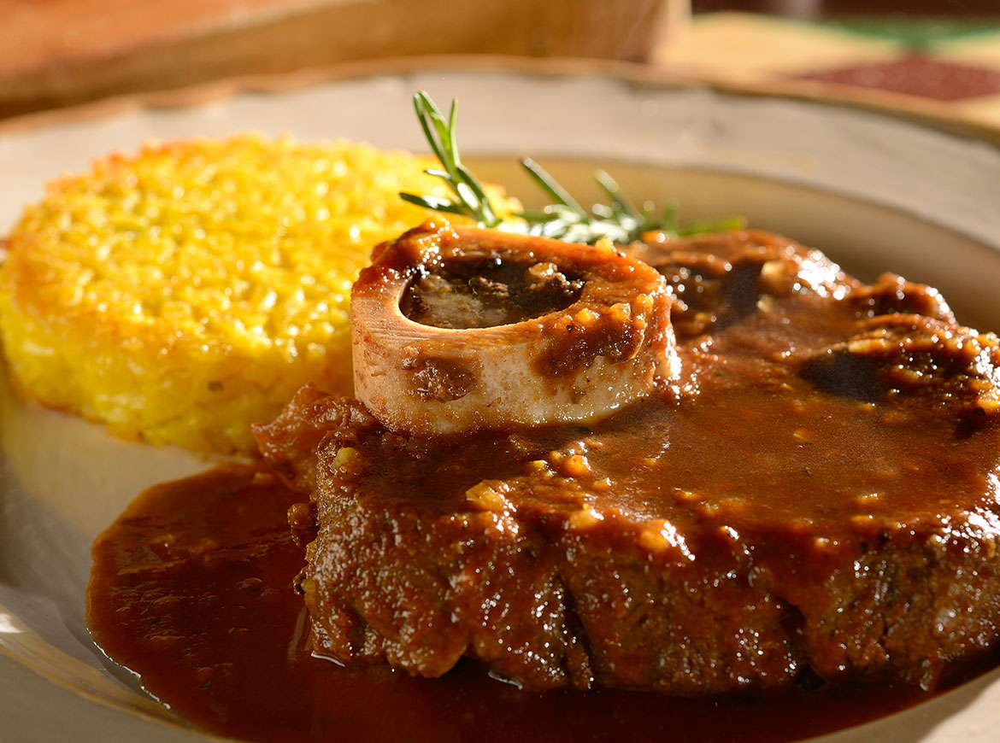

Locally known as l'oss bus a la Milanesa, these wine-braised veal shanks are a classic of northern Italian cuisine and one of Milan's most cherished signature dishes. Slow-cooked in beef broth until the meat becomes soft enough to cut with a fork, ossobuco is finished with a topping of gremolà or gremolada, a zesty herb relish made with mashed anchovies, minced garlic, parsley, and lemon zest.
Meal prep time : 2 hour 30 minutes
Servings : 4